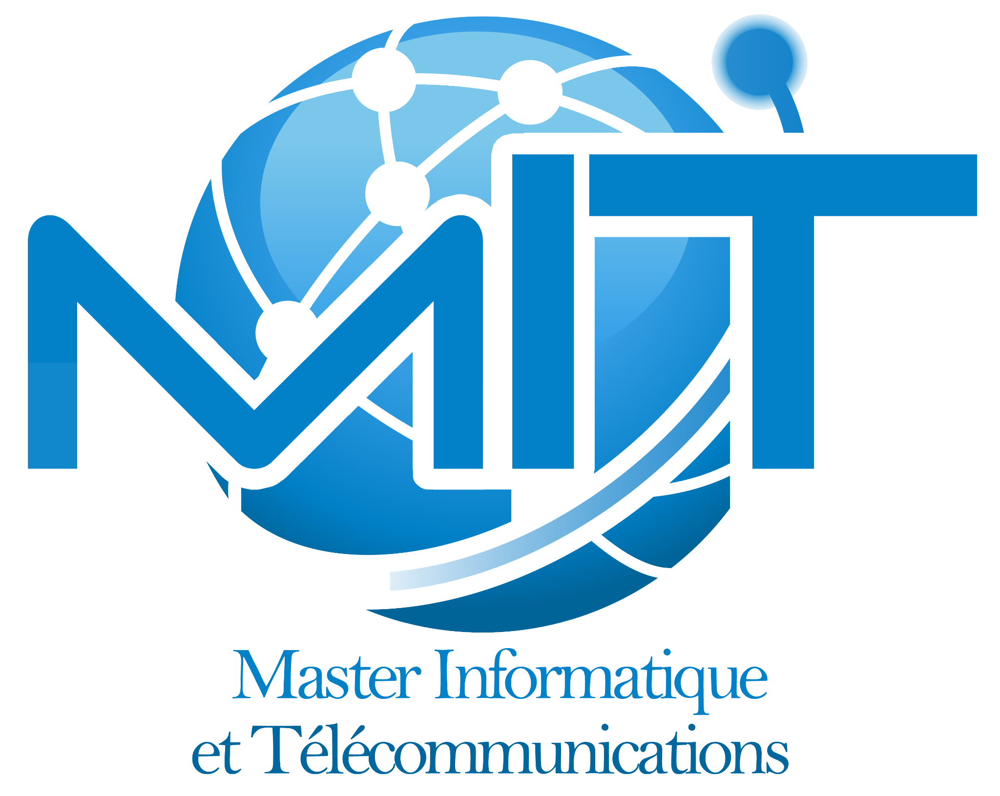

Informatique &
IA appliquée
Analyser les données, comprendre les images et concevoir des systèmes intelligents.

MASTER IT.INFORMATIQUE & TÉLÉCOMMUNICATIONSInformatique & Télécommunications
Des fondements scientifiques aux technologies de demain. Construisez votre parcours en intelligence artificielle, en informatique ou en réseaux et télécommunications.
Le Master IT associe enseignements fondamentaux en sciences et technologies de l’information et de la communication, spécialisation et initiation à la recherche.
La formation permet d’acquérir des compétences larges en informatique et télécommunications, puis d’approfondir un domaine en lien avec les axes de recherche et les applications qui vous intéressent.
Un tronc commun, puis deux options pour approfondir les méthodes et technologies de votre domaine.
Analyser les données, comprendre les images et concevoir des systèmes intelligents.
Comprendre les communications sans fil, les antennes et les technologies de transmission.
Explorez les enseignements de la plaquette de formation et comparez les deux options au semestre 3.
Programme repris de la plaquette 2025–2026 fournie. Les éventuelles évolutions de la maquette sont à confirmer auprès de la coordination.
Chargement du programme…
Programmation avancée, ingénierie des données et développement de solutions informatiques.
Apprentissage automatique, traitement des images et exploitation des données.
Réseaux, communications numériques et technologies sans fil.
Méthodologie, rédaction scientifique et présentation de travaux de recherche.
Des compétences pour les métiers de l’informatique et des télécommunications, la recherche et la poursuite d’études doctorales selon les conditions d’admission.
Le Master est présenté en temps normal et en temps aménagé. Les modalités propres à chaque régime sont à vérifier auprès de la formation.
Aux titulaires d’une licence d’études fondamentales en SMI, SMP, réseaux et télécommunications, informatique, ou d’un diplôme jugé équivalent, selon les conditions de la campagne.
Aucune nouvelle date de candidature n’est annoncée sur ce site. Consultez les avis de la Faculté pour les ouvertures, délais et modalités en vigueur.
Voir les annonces de la Faculté ↗Évaluation du parcours et des éléments demandés dans l’appel à candidatures.
Étape de sélection indiquée dans la plaquette de formation.
Échange autour du parcours, des motivations et du projet du candidat.
Les étapes ci-dessus proviennent de la plaquette fournie. L’avis officiel de la campagne concernée précise les conditions applicables.
Objectifs, conditions d’accès, enseignements et compétences : retrouvez les informations dans la plaquette du Master.
Télécharger la plaquette ↓Plaquette disponible : 2025–2026.
 Agrandir la plaquette ↗
Agrandir la plaquette ↗Informatique et IA appliquée, et Réseaux et télécommunications. Les modules spécifiques sont présentés dans le programme du semestre 3.
La plaquette présente une ouverture en temps normal et en temps aménagé. Pour connaître les horaires et les modalités d’une campagne, contactez la coordination.
Consultez l’appel officiel de la Faculté des Sciences de Rabat. Il précise la procédure, les pièces demandées et les dates. Ce site ne collecte pas de candidatures.
Le semestre 4 est consacré au projet de fin d’études. Ses modalités et son encadrement sont précisés par la formation.
Rapprochez-vous de la coordination et consultez les canaux institutionnels de la formation. Ces documents seront ajoutés ici lorsqu’ils seront disponibles pour diffusion.
Master Informatique et Télécommunications
Faculté des Sciences de Rabat
Université Mohammed V de Rabat · Maroc